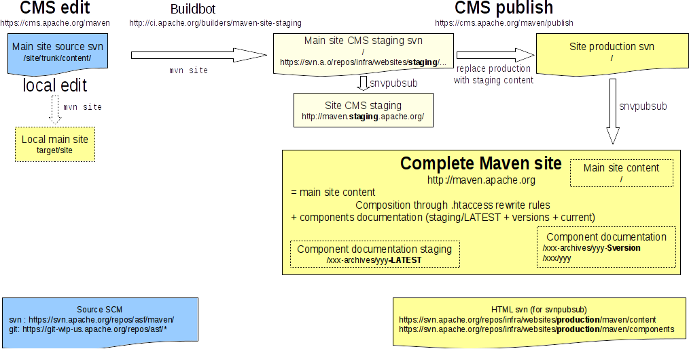

Introduction
This document gives step-by-step instructions for deploying the main Maven http://maven.apache.org website.
See Maven website introduction for instructions on the whole website publication.
Overview
Since December 2012, the overall website uses svnpubsub mechanism and the main website uses Apache CMS:
How main website publication works
Maven main website (http://maven.apache.org) is generated with maven-site-plugin from a source tree stored in svn: https://svn.apache.org/repos/asf/maven/site/trunk.
Edit source content
You can edit source content in 2 ways:
- use the CMS UI through your web browser:
- Go to https://cms.apache.org/maven/.
- Click link "Get Maven Working Copy".
- Navigate to the content you want to modify.
- Once you have modified the content, commit with the button "Submit".
- checkout the source content locally, modify it with your favorite text editor, eventually test the result (mvn site), then check-in source modifications.
After source tree is modified in svn, a Buildbot job is triggered:
- it builds the HTML site using maven-site-plugin: mvn site,
- it publishes generated HTML content to CMS staging svn area,
- svnpubsub mecanism transfers svn CMS staging content to live CMS staging site: http://maven.staging.apache.org,
Publish site content
If everything is good, publish modifications using CMS publish action.
Under the hood:
- CMS copies CMS staging svn area content to website production svn area,
- svnpubsub mecanism transfers svn production content to live production site: http://maven.apache.org.
How Doxia website publication works
Doxia uses the exact same mecanisms:
- you can edit svn source tree either locally or through CMS UI,
- a Buildbot job builds the site and updates website staging svn area,
- svnpubsub published to live staging site,
- if everything is good, publish modifications using CMS publish action,
- CMS copies CMS staging svn area content to website production svn area,
- svnpubsub mecanism transfers svn production content to live production site: http://maven.apache.org/doxia, with its extpaths.txt